1-1.1 細胞學說的建立（一）
生命現象四大特徵 ｜ 病毒的生物界線 ｜ 顯微鏡之發展史
焦點一：生命現象（Characteristics of Life）
1. 生物定義：可以獨立表現「生命現象」的完整有機個體。
2. 四大基本生命現象：
(1) 代謝：生物體內所有化學反應的總稱。包含：
• 合成反應（同化代謝）：小分子 → 大分子，吸收能量合成所需物質（如光合作用）。
• 分解反應（異化代謝）：大分子 → 小分子，釋出能量提供細胞利用（如呼吸作用）。
(2) 生長 與發育：細胞體積增大、細胞數目增多，或進行細胞分化伴隨發育。
(3) 感應：生物接受內外在刺激產生反應（如單細胞趨化游向食物、植物向光性、動物神經肌肉運動）。
(4) 生殖（繁殖）：產生新子代並將遺傳特徵延續傳遞給下一代的現象。
🔍 延伸思考：病毒（Virus）為何處於「生物」與「非生物」之間的灰色地帶？
病毒不具細胞構造，缺乏獨立進行代謝、生長與主動運動的能力；離開宿主時宛如無生物結晶，只有進入特定活細胞寄生時，才能利用宿主的酵素與能量複製增殖。
焦點二：顯微鏡的發展歷程
1. 顯微鏡之重要性：細胞極為微小，近代生物學的重要發現與細胞學說均與顯微鏡發展密不可分。
2. 各階段顯微鏡的演進：
• 詹森父子（1590）：發明首台光學複式顯微鏡，放大約 10 倍。
• 虎克（1665）：自製改良複式顯微鏡（約 50 倍），觀察軟木栓切片發現蜂窩狀小格子，命名為 細胞 (Cell)（實為死細胞壁）。
• 雷文霍克（1676）：精磨單式顯微鏡提高至 270 倍，首度觀察到活原生生物與細菌。
• 電子顯微鏡（1930起）：放大達數十萬倍以上。掃描式 (SEM) 觀察細胞表面 3D 立體細微構造；穿透式 (TEM) 觀察細胞內部超微結構。
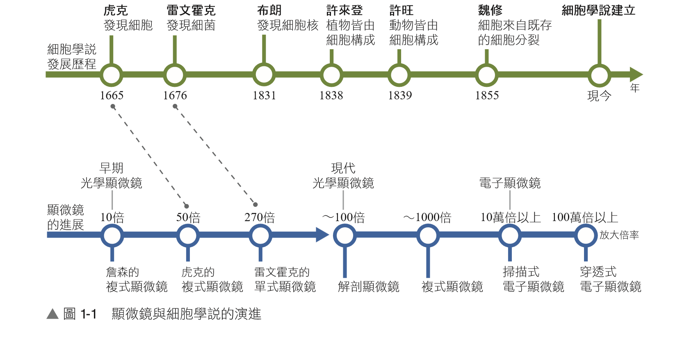
▲ 顯微鏡技術演進與細胞學說建立時間軸對照
1-1.1 細胞學說的建立（二）
細胞學說建立歷程 ｜ 細胞學說核心內容 ｜ 基礎演練題組
焦點三：細胞學說（Cell Theory）的建立過程與核心內容
1. 細胞學說建立關鍵里程碑：
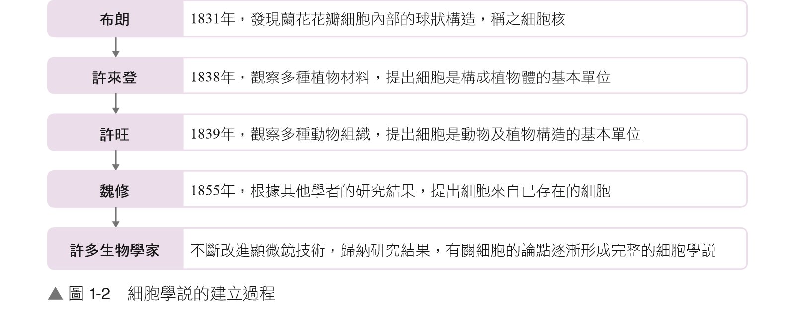
▲ 布朗（發現核） → 許來登（植物） → 許旺（動植物） → 魏修（細胞分裂）
2. 細胞學說三大核心內容摘要：
(1) 所有生物體皆由一個或多個細胞所構成。
(2) 細胞是生物體結構和功能的基本單位。
(3) 新細胞皆由已存在的舊細胞經由 細胞分裂 所產生（魏修提出）。
3. 細胞學說的生物學意義：闡明生物在微觀構造上的統一性，並為「生物演化具共同起源」奠定重要論證基石。
1-1.1 基礎練習題組
（ C ）
1.
下列有關生命現象的描述，何者完全正確？
(A) 病毒能在活細胞內增殖，故屬於完整生物
(B) 代謝作用僅包含合成新物質的過程
(C) 植物亦可進行運動（如膨壓運動）
(D) 生長現象僅包含細胞體積增大與數量增多
💡 【解題核心精析】：(A) 病毒具絕對寄生性，缺乏完整細胞結構與自主代謝，介於生物與非生物間；(B) 代謝包含同化（合成）與異化（分解）；(C) 植物可藉由細胞膨壓改變進行運動（如睡眠運動、觸發運動、氣孔開閉）；(D) 生長現象包含體積增大、數量增加以及「細胞分化與組織發育」。
（ D ）
2.
下列化學反應中，何者屬於細胞內的「合成反應（同化作用）」？
(A) 澱粉水解成葡萄糖
(B) 蛋白質分解為胺基酸
(C) 葡萄糖氧化轉變成二氧化碳和水
(D) 脂肪酸和甘油結合成脂肪
💡 【解題核心精析】：(A)、(B)、(C) 均由大分子分解為小分子，並釋放能量，為分解反應（異化作用）；(D) 1 分子甘油與 3 分子脂肪酸聚合合成三酸甘油酯，為小分子組合成大分子之合成反應（同化作用）。
（ B ）
3.
下列有關生物體內「合成反應」的敘述，何者錯誤？
(A) 將小分子原料化合成大分子物質
(B) 反應過程多半伴隨大量能量的釋出
(C) 植物光合作用整體而言屬於同化代謝
(D) 多半伴隨化學鍵與物質間的連結形成
💡 【解題核心精析】：(B) 錯誤。合成反應（同化作用）從小分子組裝成高位能之複雜分子，過程多伴隨能量的吸收與儲存（如吸熱）；分解反應才多伴隨能量釋放（如放熱）。
（ B ）
4.
關於細胞的發現與細胞學說建立的相關敘述，何者正確？
(A) 電子顯微鏡的發明對細胞最初的發現貢獻卓著
(B) 生物體的構造與功能基本單位即為細胞
(C) 魏修認為新細胞是由舊細胞成分結晶沉澱產生
(D) 虎克觀察到活細胞核，並率先提出細胞學說
💡 【解題核心精析】：(A) 虎克使用的是光學顯微鏡；(C) 魏修提出新細胞來自既存細胞之分裂；(D) 虎克觀察到死木栓細胞壁並命名 cell，細胞學說是許來登與許旺等人於近兩百年後提出。
1-1.2 細胞的形態與功能（一）
細胞大小尺度 ｜ 顯微觀察極限 ｜ 細胞形態與生理功能之適應
焦點一：細胞的大小與尺度界限
1. 細胞的一般尺度：絕大多數細胞介於 1 ～ 100 微米 (μm) 之間，必須仰賴顯微鏡方能觀察。
• 微小細胞實例：大腸桿菌長約 2 μm、人類紅血球直徑約 7～8 μm、人類白血球約 10～15 μm。
• 大型細胞實例（肉眼可見）：牛蛙卵直徑約 2 mm、鴕鳥卵黃直徑達 8 cm、人類坐骨神經細胞長度可達 1 公尺！
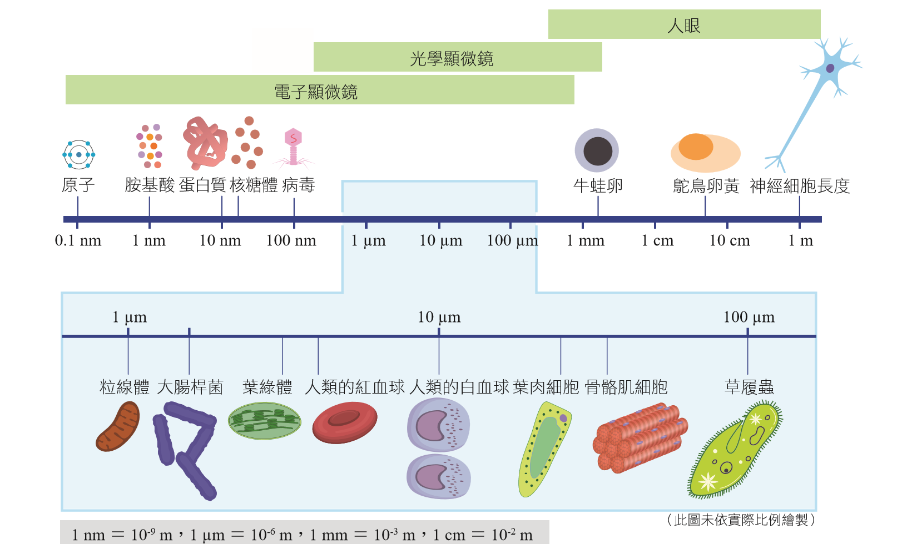
▲ 不同物質與細胞尺度：電子顯微鏡 (nm~μm) ｜ 光學顯微鏡 (μm~mm) ｜ 肉眼 (＞0.1mm)
焦點二：細胞的形態多樣性與機能分工
1. 「形態隨功能而異」原則：多細胞生物細胞分化，形態特化以完美配合其生理機能。
• 神經細胞：具有許多細長樹狀突起（樹突與軸突），大幅增加接觸面積，專門用於電訊號與化學訊息的接收與傳導。
• 肌肉細胞：呈細長纖維狀，富含肌動蛋白與肌凝蛋白，利於收縮舒張以產生運動。
• 木質部導管與管胞：呈中空管狀且細胞壁加厚，能高效率疏導水分與無機鹽，並支撐植物體。
• 表皮細胞：扁平且排列緊密無間隙，能有效防止水分散失並抵禦病原體入侵。
• 保衛細胞：兩兩成對呈半月形，兩側壁厚薄不均，藉由細胞膨壓變化控制氣孔開閉。
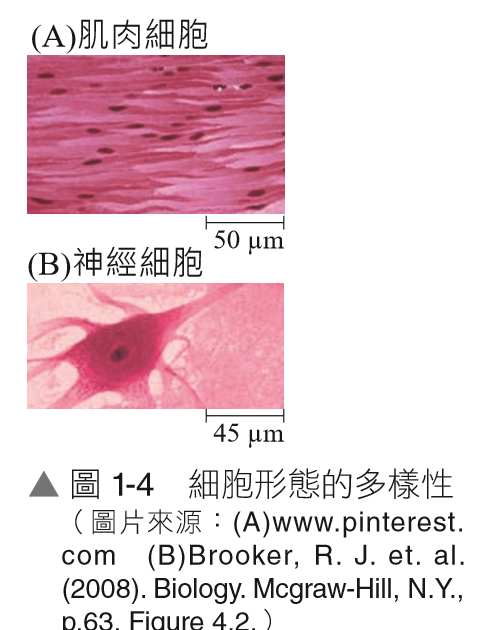
▲ (A) 纖維狀肌肉細胞 (B) 多突起神經元
1-1.2 細胞的形態與功能（二）
細胞化學組成 ｜ 水的重要性 ｜ 醣類的分類與功能
焦點三：組成細胞的化學分子總覽
1. 細胞組成成分：分為無機物（水、礦物質如 Na+、K+、Ca2+）與有機物（醣類、蛋白質、脂質、核酸）。
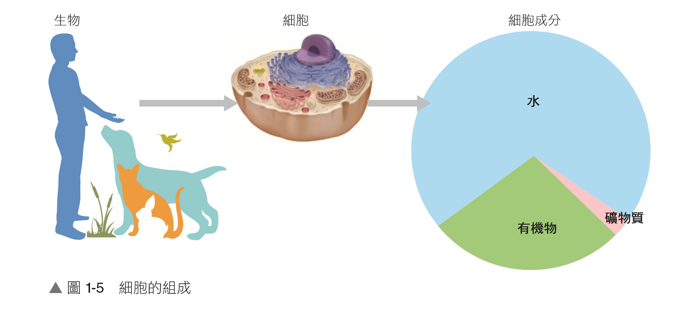
▲ 細胞內化學成分比例：水（約70%最多） ＞ 蛋白質（有機物最多） ＞ 脂質 ＞ 醣類 ＞ 核酸 ＞ 礦物質
2. 水 (Water) 的生理功能：
• 細胞中含量最多的化合物（約占細胞重量 70%）。
• 良好溶劑：水具極性，能溶解多種營養與離子，利於細胞內化學代謝進行；高比熱可穩定細胞溫度。
焦點四：醣類（Carbohydrates，碳水化合物）
1. 元素組成與通式：由 C、H、O 組成，分子通式多為 (CH2O)n。主要作為能量供應、能量儲存與結構支撐。
2. 醣類的層次分類與機能比較表：
| 類別 |
組成特徵 |
常見種類實例 |
主要生理機能與重要性 |
| 單醣 |
五碳醣 (C5H10O5) |
核糖、去氧核糖 |
分別構成 RNA 與 DNA 核苷酸之骨架成分。 |
| 六碳醣 (C6H12O6) |
葡萄糖、果糖、半乳糖 |
細胞進行呼吸作用最主要的直接能量來源。 |
| 雙醣 |
2 分子單醣脫水聚合 |
麥芽糖（種子發芽）
蔗糖（植物養分運輸形式）
乳糖（哺乳類乳汁） |
麥芽糖 = 葡萄糖 + 葡萄糖
蔗糖 = 葡萄糖 + 果糖
乳糖 = 葡萄糖 + 半乳糖 |
| 多醣 |
數百至數千單醣聚合 |
澱粉（植物儲存性多醣）
肝醣（動物儲存性多醣）
纖維素（植物細胞壁主成分） |
澱粉與肝醣為能量儲備庫；纖維素耐拉扯，維持植物細胞堅固結構。 |
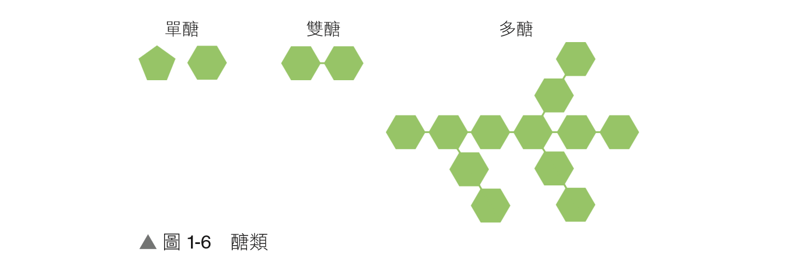
▲ 單醣（單元） ｜ 雙醣（二聚體） ｜ 多醣（長鏈聚合物）
1-1.2 細胞的形態與功能（三）
蛋白質機能 ｜ 脂質三大類別 ｜ 核酸 DNA 與 RNA 構造
焦點五：蛋白質（Proteins）
1. 基本單位與元素：由 C、H、O、N、S 組成。基本構成單位為 胺基酸（生物體主要有 20 種）。
2. 結構與多樣性：胺基酸藉肽鍵相連成多肽鏈，不同種類、數量與排列順序摺疊出千變萬化的蛋白質立體構型。
3. 廣泛生理機能：酵素（催化代謝）、抗體（免疫防禦）、血紅素（運輸氧氣）、膠原蛋白與毛髮（構造支撐）、肌動蛋白（肌肉收縮）。
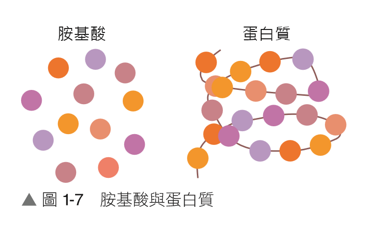
▲ 胺基酸（珠子）串接摺疊成蛋白質
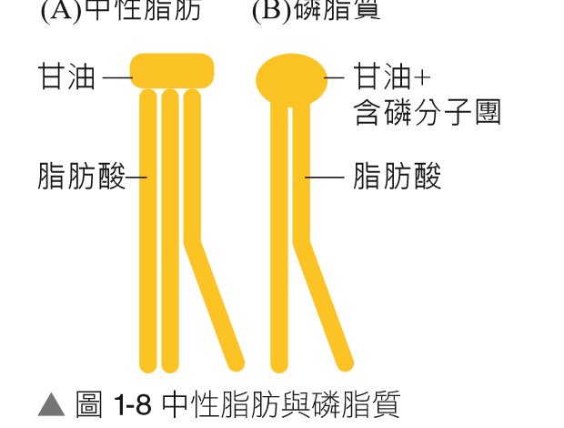
▲ 中性脂肪（3酸） vs 磷脂質（2酸+磷）
焦點六：脂質（Lipids）與核酸（Nucleic Acids）
1. 脂質主要三大種類：
• 中性脂肪（三酸甘油酯）：1 分子甘油 ＋ 3 分子脂肪酸。為體內能量最高密度的儲存形式，具隔熱保溫與緩衝抗壓功能。
• 磷脂質：1 分子甘油 ＋ 2 分子脂肪酸 ＋ 含磷親水端。構成生物膜（細胞膜、胞器膜）最主要的骨架。
• 固醇類：具四個碳環構造（不具脂肪酸），如膽固醇（調節膜流動性）、性激素（睪固酮、動情素）。
2. 核酸（DNA 與 RNA）結構與比較表：基本組成單位為 核苷酸（含氮鹼基 ＋ 五碳醣 ＋ 磷酸基）。
| 核酸類型 | 五碳醣 | 含氮鹼基 | 空間結構 | 主要生理機能 |
|---|
DNA
(去氧核糖核酸) |
去氧核糖 |
A、T、C、G
(具胸腺嘧啶 T) |
多為 雙股螺旋 |
攜帶遺傳訊息的遺傳物質（基因即具功能之 DNA 片段）。 |
RNA
(核糖核酸) |
核糖 |
A、U、C、G
(具尿嘧啶 U) |
多為 單股 |
參與遺傳訊息的轉錄與蛋白質的轉譯合成。 |
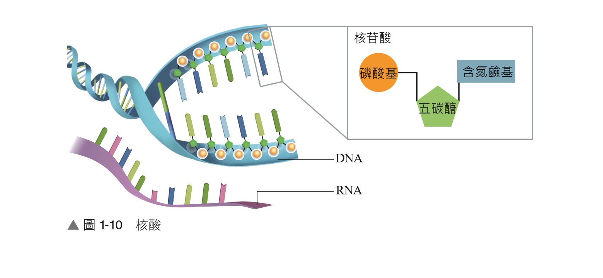
▲ 核苷酸構造（磷酸+五碳醣+鹼基） ｜ DNA 雙股螺旋 vs RNA 單股鏈
1-1.2 基礎練習題組
核酸構造判別 ｜ 細胞物質組成 ｜ 蛋白質特性 ｜ 病毒成分 ｜ 顯微解析度計算
（ B ）
1.
有關生物體內「核酸」的構造與功能敘述，下列何者正確？
(A) 基因是指具有特定遺傳訊息片段的 DNA 或 RNA
(B) 組成 DNA 與 RNA 的基本重複構造單位皆為核苷酸
(C) 核糖核酸簡稱為 DNA，去氧核糖核酸簡稱為 RNA
(D) 在真核細胞中，RNA 分子多半為穩定的雙股螺旋構造
💡 【解題核心精析】：(A) 細胞生物的基因皆為 DNA 片段（僅部分 RNA 病毒遺傳物質為 RNA）；(C) 核糖核酸簡稱為 RNA，去氧核糖核酸為 DNA；(D) RNA 在細胞中多以單股形式存在，DNA 多為雙股螺旋。
（ C ）
2.
下列關於細胞內各類化學物質的敘述，何者完全正確？
(A) 醣類為植物細胞進行光合作用所消耗的最主要原料
(B) 動物與植物體內最主要儲存能量的醣類皆以澱粉為主
(C) 澱粉和纖維素分別為植物的儲存性多醣與植物細胞壁的主成分
(D) DNA 的中文全名為核糖核酸，RNA 為去氧核糖核酸
💡 【解題核心精析】：(A) 光合作用原料為水與二氧化碳，醣類是光合作用產物；(B) 動物體內儲存多醣以肝醣為主；(D) DNA 是去氧核糖核酸，RNA 是核糖核酸。
（ B ）
3.
下列有關「蛋白質」構造與生理功能的敘述，何者正確？
(A) 人體維持基礎代謝的主要能量直接來源是胺基酸
(B) 多肽鏈中胺基酸的種類與排列順序會決定蛋白質的立體構型與功能
(C) 自然界中構成生物體蛋白質的核苷酸主要有 20 種
(D) 蛋白質在細胞內總重量含量僅次於核酸，具有催化等多種機能
💡 【解題核心精析】：(A) 人體最主要的直接能源物質是葡萄糖（醣類）；(C) 構成蛋白質的基本單元是「胺基酸」而非核苷酸；(D) 細胞內含量最多的是水，蛋白質佔有機物的第一位（含量僅次於水）。
（ A, B, D ）
4.
狂犬病毒之核心基本構造僅由單股 RNA 和蛋白質外殼組成，其最外層再包覆一層來自宿主細胞的脂質套膜。請問下列哪些化學物質可能存在於狂犬病毒的完整結構中？（應選 3 項）
(A) 胺基酸
(B) 磷脂質
(C) 去氧核糖
(D) 核糖
(E) 纖維素
💡 【解題核心精析】：蛋白質外殼由胺基酸(A)組成；套膜含雙層磷脂質(B)；RNA 的五碳醣為核糖(D)。狂犬病毒為 RNA 病毒，不含去氧核糖(C)，亦不含植物成分纖維素(E)。
（ B ）
5.
人類正常肉眼的解像力（極限解析距離）約為 0.1 mm。若使用放大倍率為 1000 倍的光學顯微鏡觀察下列四種不同長度的微小構造，何者在視野下「看不見」？
(A) 10-6 m
(B) 10-5 mm
(C) 10-5 cm
(D) 104 nm
💡 【解題核心精析】：顯微鏡放大 1000 倍後，影像尺寸必須達到肉眼解析極限 0.1 mm 才能被分辨看見。
• (A) 10-6 m = 10-3 mm × 1000 = 1 mm > 0.1 mm（清晰可見）
• (B) 10-5 mm × 1000 = 10-2 mm = 0.01 mm < 0.1 mm（小於肉眼極限，看不見）
• (C) 10-5 cm = 10-4 mm × 1000 = 0.1 mm（達到可見門檻）
• (D) 104 nm = 10-2 mm × 1000 = 10 mm（清晰可見）。
1-1.3 原核細胞與真核細胞（一）
真核細胞基本架構 ｜ 動植物細胞3D比較 ｜ 細胞膜流體鑲嵌模型
焦點一：真核細胞的基本構造與動植物細胞比較
1. 三大基本架構：細胞膜、細胞質（細胞質液 + 胞器）、細胞核。植物、藻類及真菌外圍另具細胞壁。
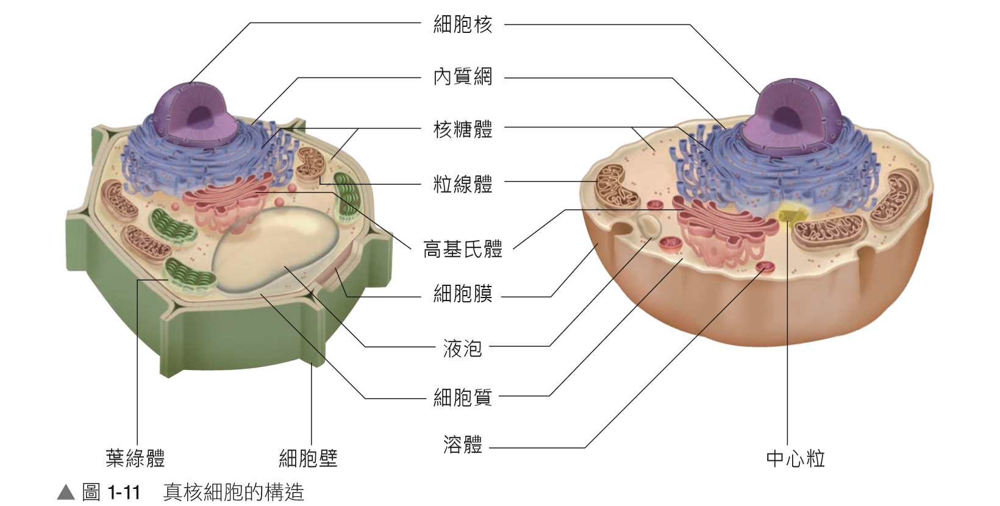
▲ 植物細胞（具細胞壁、大中央液泡、葉綠體） vs 動物細胞（具中心粒、小液泡、溶體）
焦點二：細胞膜的流體鑲嵌模型（Fluid Mosaic Model）
1. 基本骨架：由 雙層磷脂質 分子排列形成連續平面，親水端朝向膜內外兩側水溶液，疏水性脂肪酸尾部朝向內側。
2. 膜蛋白（Membrane Proteins）：
• 位置：鑲嵌於膜表面或貫穿雙層磷脂質。能在膜中側向移動，展現膜的流動性。
• 功能：物質運輸通道（離子通道、載體蛋白）、受體（接收細胞外荷爾蒙或化學訊號）、催化酵素。
3. 醣類分子（Carbohydrates）：
• 與膜蛋白或磷脂結合，僅分布於細胞膜的外側表面。
• 作為細胞表面的「身分識別標籤」，與細胞辨識（如血型、免疫自我辨識）密切相關。
4. 膽固醇（Cholesterol）：鑲嵌於動物細胞膜磷脂分子間，高溫時限制磷脂移動、低溫時防止凝固，調節並穩定細胞膜的流動性。
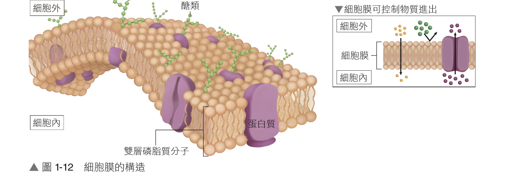
▲ 細胞膜構造：磷脂雙層、鑲嵌蛋白質、外側醣蛋白標籤與選擇性通透
1-1.3 原核細胞與真核細胞（二）
細胞核超微構造 ｜ 染色質與染色體 ｜ 核糖體與中心粒
焦點三：細胞核（Nucleus）——遺傳管控中心
1. 核膜（Nuclear Envelope）：由 雙層膜 組成，外膜與粗糙內質網相連。膜上具有 核孔，嚴格管制 RNA、蛋白質等大分子進出細胞核。
2. 核質與染色質（Chromatin）：核內膠狀液體散布著細絲狀染色質。由 DNA ＋ 組織蛋白質 共同組成，攜帶全套遺傳基因。細胞分裂時濃縮纏繞成顯微鏡可見的短棒狀染色體。
3. 核仁（Nucleolus）：核內顏色深暗緻密區域（一個或數個），成分為 RNA 與蛋白質，專門負責 核糖體次單元 的合成與組裝。
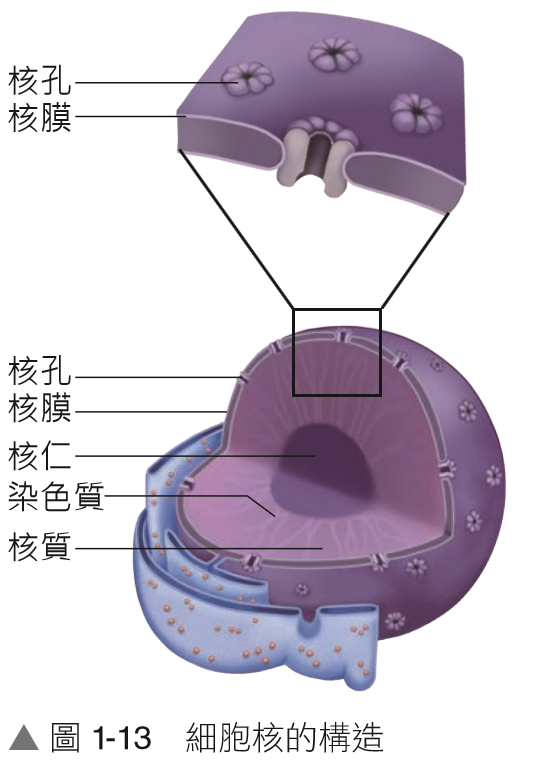
▲ 細胞核：雙層核膜、核孔、核仁與染色質
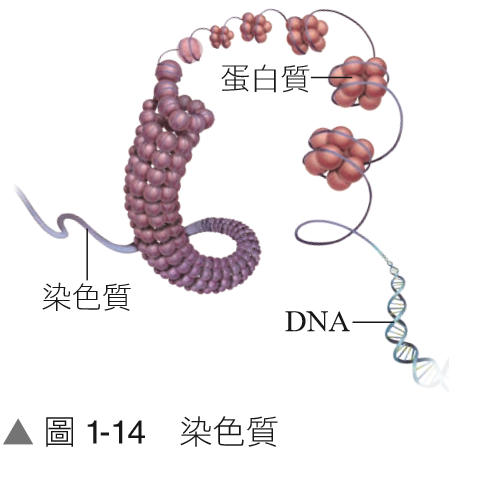
▲ 染色質：DNA 雙螺旋纏繞組織蛋白
焦點四：不具膜的胞器（核糖體與中心粒）
1. 核糖體（Ribosome）：
• 構造成分：不具膜構造，由核糖體 RNA (rRNA) 與蛋白質組成，分為大、小兩個次單元。
• 主要機能：細胞中 蛋白質合成 的工廠。
• 細胞內分布：游離分散於細胞質液（合成胞內自身蛋白質）、附著於粗糙內質網表面（合成外泌蛋白或膜蛋白），亦存在於粒線體與葉綠體基質中。
2. 中心體與中心粒（Centrosome & Centrioles）：
• 構造特徵：不具膜構造。每個中心體由兩個互相垂直排列的中心粒及其周圍微管蛋白組成。由蛋白質微管排列而成。
• 主要機能：動物細胞分裂時負責紡錘絲的形成，協助染色體的分離；並與纖毛、鞭毛的基底發育相關。
• 分布特點：普遍存在於動物細胞與低等植物，高等植物細胞通常不具中心粒。
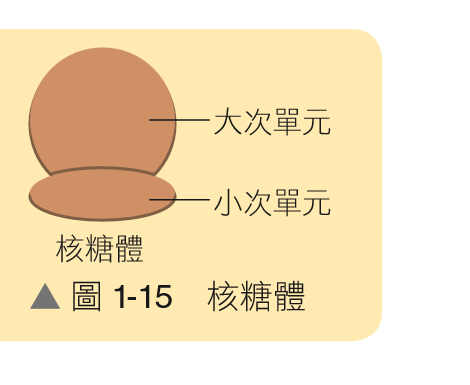
▲ 核糖體大、小次單元
1-1.3 原核細胞與真核細胞（三）
單層膜胞器 ｜ 內質網加工運輸 ｜ 高基氏體分泌 ｜ 液泡與溶體
焦點五：單層膜胞器之機能與協同作用
1. 內質網（Endoplasmic Reticulum，ER）：
• 構造：單層膜摺疊而成的扁囊狀與分支管狀網絡，內連核膜、外通細胞膜。
• 粗糙內質網 (rER)：表面附著核糖體，負責接收新合成的蛋白質進行修飾、折疊與運輸。
• 平滑內質網 (sER)：表面無核糖體，專司脂質與固醇類合成；在肝細胞具解毒作用、在肌肉細胞調節鈣離子釋放。
2. 高基氏體（Golgi Apparatus）：
• 構造：數個如飛碟盤狀重疊的單層膜扁囊，周圍簇擁運輸囊泡。
• 功能：細胞的 分泌與轉運中心。接收來自粗糙內質網的蛋白質，進行糖基化修飾、分類、包裝，產生囊泡送往細胞膜外分泌（外泌作用）或形成溶體。
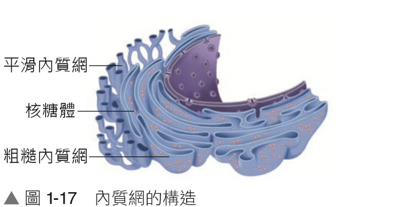
▲ 內質網：粗糙型附著核糖體
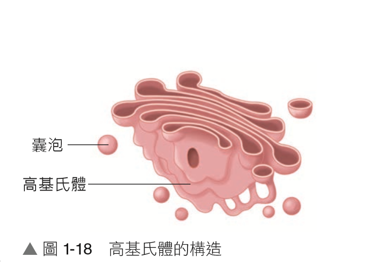
▲ 高基氏體修飾包裝囊泡
3. 液泡（Vacuole）：
• 植物成熟中央液泡：佔細胞 90% 體積，儲存水分、無機鹽、花青素與代謝廢物；充水維持細胞膨壓與剛性形狀。
• 動物液泡與變形：較小且多樣，如白血球吞噬細菌形成之 吞噬體；淡水草履蟲具 伸縮泡 排除多餘水分。
4. 溶體（Lysosome）：
• 由高基氏體衍生的單層膜囊泡，內部富含多種酸性水解酵素。
• 機能：分解胞內大分子、消化衰老破損胞器進行自噬回收、協助白血球清除外來病原體。
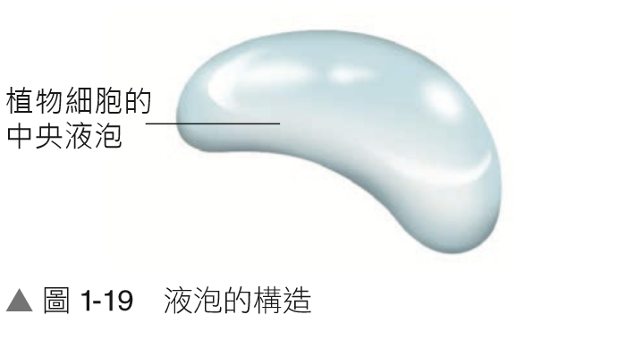
▲ 植物中央大液泡維持膨壓
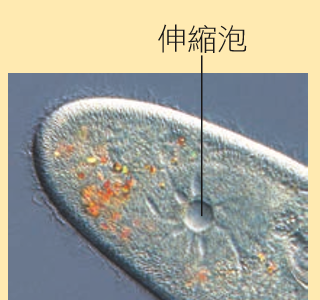
▲ 草履蟲伸縮泡調控水分
1-1.3 原核細胞與真核細胞（四）
能量轉換胞器 ｜ 雙層膜構造 ｜ 半自主胞器 ｜ 細胞器數量邏輯
焦點六：粒線體與葉綠體——細胞的能量工廠
1. 粒線體（Mitochondria）——細胞的發電廠：
• 構造：雙層膜構造。外膜平滑；內膜向內高度摺疊形成許多皺褶（嵴），大幅增加表面積；內膜包夾之液體稱為基質。
• 功能：內含大量呼吸酵素，為細胞進行有氧呼吸將有機物氧化分解產生 ATP 的主要場所。代謝旺盛之細胞（如心肌、肝臟）數量極多。
2. 葉綠體（Chloroplast）——綠色工廠：
• 構造：雙層膜構造。內部由扁平囊狀的 類囊體 堆疊成葉綠餅，懸浮於充滿酵素的基質中。
• 功能：藻類與植物進行光合作用場所。類囊體膜富含葉綠素進行光反應；基質進行固碳反應（卡爾文循環）合成葡萄糖。
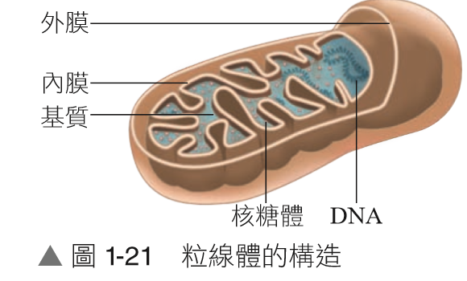
▲ 粒線體：外膜、皺褶內膜、基質、自身環狀 DNA 與核糖體
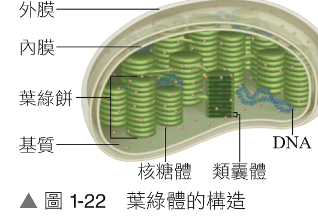
▲ 葉綠體：外膜、內膜、類囊體（葉綠餅）、基質與 DNA
3. 「半自主胞器」三大關鍵特徵（內共生學說證據）：
(1) 擁有自身獨立的環狀 DNA。
(2) 擁有自身的 70S 核糖體，能自行轉錄轉譯合成小部分自身所需蛋白質。
(3) 能自行像細菌般進行分裂增殖。
💡 滿分題型解題思維：如何推論不同細胞中何種胞器較多？
• 心肌／飛行肌／精子尾部：劇烈收縮需極多能量 → 粒線體數量特別龐大。
• 胰臟外分泌細胞／唾腺／漿細胞（抗體）：大量分泌外泌蛋白 → 粗糙內質網與高基氏體高度發達。
• 葉肉細胞：專司吸收陽光製造養分 → 葉綠體含量豐富。
1-1.3 原核細胞與真核細胞（五）
原核 vs 真核對照 ｜ 隔間化優點 ｜ 動植物與原核全構造大對比
焦點七：原核細胞與真核細胞核心構造對照
1. 原核細胞 (Prokaryotic cell)：無核膜包裹之細胞核（DNA 裸露於細胞質的擬核區）、無任何膜狀胞器、僅有 70S 核糖體。代表：細菌、藍綠菌。
2. 膜狀胞器的進化優勢——細胞內部隔間化 (Compartmentalization)：
• 隔絕不同化學反應微環境，避免互相干擾破壞；集中酵素與反應物，大幅提高代謝反應效率。
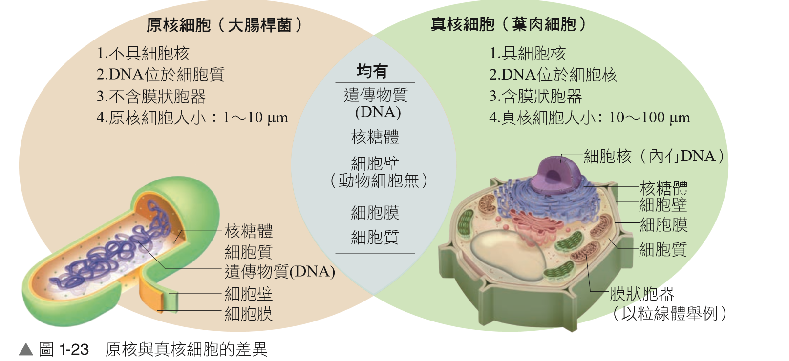
▲ 原核細胞（大腸桿菌 1~10μm） vs 真核細胞（植物葉肉細胞 10~100μm）
焦點八：植物、動物與原核細胞構造完整大對比
| 細胞構造 |
膜層數 |
主要機能特色 |
植物細胞 |
動物細胞 |
原核細胞 |
| 細胞膜 | 單層(雙磷脂) | 選擇性通透管制物質進出 | ✓ | ✓ | ✓ |
| 細胞核 | 雙層膜 | 內含染色質，主宰生命代謝與遺傳 | ✓ | ✓ | ✗ (無核膜) |
| 細胞質 | — | 膠狀液體，代謝反應場所 | ✓ | ✓ | ✓ |
| 核糖體 | 無膜 | 由蛋白質+rRNA組成，合成蛋白質 | ✓ | ✓ | ✓ |
| 內質網 | 單層膜 | 粗糙型修飾蛋白質；平滑型合成脂質 | ✓ | ✓ | ✗ |
| 高基氏體 | 單層膜 | 蛋白質修飾、包裝與分泌中心 | ✓ | ✓ | ✗ |
| 液泡 | 單層膜 | 儲存物質維持膨壓；動物吞噬泡 | ✓ (大型中央) | ✓ (小型) | ✗ |
| 粒線體 | 雙層膜 | 有氧呼吸產生 ATP，半自主胞器 | ✓ | ✓ | ✗ |
| 葉綠體 | 雙層膜 | 光合作用製造醣類，半自主胞器 | ✓ (葉肉綠色處) | ✗ | ✗ |
| 細胞壁 | 非膜構造 | 保護細胞，支持外型（植物含纖維素） | ✓ (纖維素) | ✗ | ✓ (肽聚醣等) |
| 溶體 | 單層膜 | 含酸性水解酶，自噬與消化廢物 | △ (液泡代之) | ✓ | ✗ |
| 中心體/粒 | 無膜 | 協助微管發育與染色體分離 | ✗ (通常無) | ✓ | ✗ |
1-1.3 基礎練習題組
胞器機能判斷 ｜ 核酸分布鑑定 ｜ 細胞形狀維持 ｜ 膜構造層數 ｜ 原核真核鑑別
（ A ）
1.
細胞質內的何種胞器具有轉譯「合成蛋白質」的主要生理功能？
(A) 核糖體
(B) 高基氏體
(C) 溶體
(D) 葉綠體
💡 【解題核心精析】：核糖體是由蛋白質與 rRNA 組成的不具膜胞器，為細胞中將胺基酸依 mRNA 密碼序列組裝成蛋白質的合成基地。
（ A ）
2.
下列細胞構造或胞器成分中，何者「完全不含核酸」的化學成分？
(A) 核膜
(B) 核糖體
(C) 染色質
(D) 核仁
💡 【解題核心精析】：核膜為雙層磷脂質與膜蛋白構成之生物膜，不含核酸；核糖體含 rRNA、染色質含 DNA、核仁富含 rRNA 與核糖體次單元成分。
（ A, C ）
3.
下列哪些細胞構造與「維持植物細胞特定形狀與機械剛性」有密切關聯？（應選 2 項）
(A) 中央大液泡
(B) 細胞膜
(C) 細胞壁
(D) 內質網
(E) 葉綠體
💡 【解題核心精析】：植物細胞壁(C)為堅韌的纖維素外殼，能抵抗物理形變；成熟植物細胞內的大型中央液泡(A)充水飽滿產生向外的膨壓，緊推細胞壁，共同維持植物挺立姿態與形狀。
（ A ）
4.
下列有關真核細胞各胞器與構造的敘述，何者完全正確？
(A) 粒線體是進行有氧呼吸的主要場所，葉綠體可將光能轉換儲存為化學能
(B) 內質網直接與細胞膜相連，為脂質唯一合成與分泌至細胞外的通道
(C) 核糖體主要存在於細胞核內，為製造遺傳物質 DNA 的主要胞器
(D) 細胞膜、粒線體和葉綠體皆由雙層膜（兩層磷脂雙層）構造所構成
💡 【解題核心精析】：(B) 內質網向內與核膜相通，分泌物需經高基氏體包裝；(C) 核糖體在細胞質中合成蛋白質；(D) 細胞膜為「一層」生物膜（由一對磷脂雙層構成），粒線體與葉綠體才具有內外「兩層」生物膜。
（ C ）
5.
下列有關「原核細胞」和「真核細胞」構造的比較選項，何者正確？
(A) 細胞核：原核細胞【有】、真核細胞【有】
(B) 內質網：原核細胞【有】、真核細胞【有】
(C) 核糖體：原核細胞【有】、真核細胞【有】
(D) 細胞壁：原核細胞【有】、真核細胞【無】
💡 【解題核心精析】：(A) 原核細胞無核膜，不具真正細胞核；(B) 原核細胞缺乏內質網等膜狀胞器；(D) 植物、藻類與真菌等真核生物均具細胞壁；(C) 核糖體為無膜構造，原核與真核細胞均具備以合成生命所需之蛋白質。
📌 胞器特性快問快答大統整
• 雙層膜構造：細胞核、粒線體、葉綠體（三者皆含 DNA、RNA、核糖體，皆具雙層膜）。
• 單層膜構造：內質網、高基氏體、液泡、溶體。
• 不具膜構造：核糖體、中心體／中心粒、細胞壁（細胞骨架）。
• 含核酸 (DNA/RNA)：細胞核、粒線體、葉綠體、核糖體。
1-1 課後演練（一）
大考趨勢單選精練 ｜ 生命現象 ｜ 電顯尺度 ｜ 雙醣 ｜ 動物中心粒 ｜ 蛋白質特性
（ C ）
1.
下列哪一個生理狀態與生命現象，「絕對不會」發生在單細胞生物個體上？
(A) 細胞吸收養分後使細胞體積增大
(B) 同化合成作用之速率大於分解作用
(C) 細胞群特化分工並進行細胞分化
(D) 感應環境中的外界化學養分濃度並產生游動
💡 【解題核心精析】：單細胞生物單獨一個細胞即是一個完整獨立的生命體，其生長透過細胞體積增大或細胞分裂產生新個體，不會發生多細胞生物體內的「細胞分化」現象（細胞分化是多細胞生物形成不同組織與器官的歷程）。
（ C ）
2.
下列何種微小病原體或生物體，在大多數情況下必須使用「電子顯微鏡」才能清楚觀察其超微形態構造？
(A) 瘧原蟲（原生生物）
(B) 金黃色葡萄球菌（細菌）
(C) 新冠冠狀病毒 (SARS-CoV-2)
(D) 釀酒酵母菌（真菌）
💡 【解題核心精析】：瘧原蟲（數微米至十微米）、葡萄球菌（約 1 μm）、酵母菌（約 5～10 μm）均可利用光學顯微鏡清晰辨識；病毒（如冠狀病毒直徑僅約 100 nm）遠低於光學顯微鏡極限解析度（約 200 nm），必須仰賴電子顯微鏡。
（ C ）
3.
下列生物體常見的醣類分子中，何者在化學分類上屬於「雙醣」？
(A) 澱粉
(B) 肝醣
(C) 麥芽糖
(D) 纖維素
💡 【解題核心精析】：澱粉、肝醣與纖維素皆是由成百上千個葡萄糖分子脫水縮合構成的「多醣」；麥芽糖是由 2 分子葡萄糖結合成的「雙醣」。
（ D ）
4.
下列何種細胞構造在動物細胞分裂時清楚可見，但在絕大多數的高等被子植物細胞中卻完全缺乏？
(A) 細胞壁
(B) 葉綠體
(C) 細胞核
(D) 中心粒
💡 【解題核心精析】：中心粒（中心體）存在於動物細胞中，負責在有絲分裂時協助紡錘絲形成與微管排列；高等植物細胞分裂時雖有紡錘絲形成，但缺乏中心粒構造。
（ D ）
5.
下列人體與細胞代謝所需的營養分子中，何者「無法」被細胞氧化分解以作為提供能量的來源？
(A) 醣類
(B) 脂質
(C) 蛋白質
(D) 維生素
💡 【解題核心精析】：醣類（4 kcal/g）、蛋白質（4 kcal/g）、脂質（9 kcal/g）皆為能源營養素；維生素為微量有機分子，作為輔酶參與調節代謝反應，本身不能氧化產生能量。
（ A ）
6.
下列有關細胞內「蛋白質」構造與生理功能的敘述，何者正確？
(A) 構成生物體蛋白質的基本胺基酸種類至少有 20 種
(B) 蛋白質功能繁多，例如主要負責催化體內化學反應進行的抗體
(C) 只要胺基酸的種類與數量完全相同，組合而成的蛋白質功能必然完全相同
(D) 蛋白質為細胞內重量比例最高的物質，具有多樣化的生命機能
💡 【解題核心精析】：(B) 催化反應進行的是「酵素」，抗體的功能是專一性結合抗原進行免疫；(C) 胺基酸排列順序不同，摺疊之三度空間構型即不同，機能亦相異；(D) 細胞內含量最多之分子為水，蛋白質為細胞內含量最多的「有機物」。
1-1 課後演練（二）
大考趨勢單選精練 ｜ 胞器產能 ｜ 原核真核鑑別 ｜ 粒線體生理意義 ｜ 細胞尺度推論
（ D ）
7.
在探討細胞內胞器交互作用的科學益智遊戲中，當原始細胞獲得下列哪一種胞器後，其將養分轉換為 ATP 能量的效率得以大幅提升數十倍？
(A) 核糖體
(B) 內質網
(C) 中心體
(D) 粒線體
💡 【解題核心精析】：粒線體能利用氧氣進行有氧呼吸，將葡萄糖經丙酮酸徹底氧化分解為 CO2 與 H2O，每分子葡萄糖可產生高達約 30～32 分子 ATP，產能效率遠高於細胞質發酵。
（ A ）
8.
若要明確區分某單細胞微生物究屬「真核生物」或「原核生物」，下列何項構造特徵是最關鍵的判定指標？
(A) 細胞內有無核膜包圍之細胞核
(B) 細胞外圍有無保護性的細胞壁
(C) 細胞是否具備選擇通透之細胞膜
(D) 細胞質內有無合成蛋白質之核糖體
💡 【解題核心精析】：原核生物與真核生物最本質的核心差異在於有無核膜分隔出的細胞核及有無膜狀胞器。細胞壁、細胞膜與核糖體在兩大類生物中均普遍存在。
（ B ）
9.
綠色植物細胞吸收環境中的光能，並一步步利用該能量轉移合成出蛋白質。請問下列哪一個胞器與此完整生理歷程「最無直接關聯」？
(A) 葉綠體
(B) 中央大液泡
(C) 核糖體
(D) 粒線體
💡 【解題核心精析】：植物以葉綠體(A)吸收光能合成醣類，再由細胞質與粒線體(D)氧化醣類產生 ATP 能量，最後驅動核糖體(C)將胺基酸合成為蛋白質。中央大液泡(B)主司水分儲存與膨壓維持，與此產能合成鏈無直接關聯。
（ C ）
10.
細胞的形態與胞器分佈常與其生理功能密切相關。若已知人體心肌細胞與肝臟細胞內含有異常眾多的粒線體，對此現象最合理的生物學解釋為何？
(A) 該類細胞染色體中含有數量較多的基因
(B) 該類細胞對外界能量的需求程度顯著較低
(C) 該細胞內部 ATP 的合成與水解反應極為旺盛頻繁
(D) 該細胞合成蛋白質時僅需要粒線體提供酵素
💡 【解題核心精析】：粒線體為細胞有氧呼吸製造 ATP 之場所。心肌不斷自主搏動、肝臟負責全身繁複代謝，兩者能量需求極高，故胞內 ATP 的合成與消耗反應極為頻繁，需大量粒線體常駐供能。
（ D ）
11.
有關於「原核細胞」與「真核細胞」的生物學特性比較，下列敘述何者完全正確？
(A) 兩者細胞外圍皆必然具有細胞壁
(B) 兩者的遺傳物質皆是由核糖核酸 (RNA) 所構成
(C) 原核細胞與真核細胞的細胞質中均普遍具備中心粒
(D) 真核細胞的形態變化及體積尺度通常顯著較原核細胞為大
💡 【解題核心精析】：(A) 動物細胞無細胞壁；(B) 所有細胞生物的遺傳物質皆為 DNA（去氧核糖核酸）；(C) 原核生物缺乏中心粒與任何細胞骨架中心體；(D) 原核細胞直徑一般約 1～10 μm，真核細胞多介於 10～100 μm，真核細胞體積與形態複雜度均顯著更大。
1-1 課後演練（三）
學測跨章節多選題組 ｜ 內質網與高基氏體 ｜ 葉綠體微構造 ｜ 生物膜本質 ｜ 流體鑲嵌模型
（ A, D, E ）
多選 1.
下列有關真核細胞內「內質網」與「高基氏體」的構造與功能比較，哪些正確？（應選 3 項）
(A) 兩者在構造上皆屬於單層膜所構成的囊狀或管狀胞器
(B) 高基氏體主要負責細胞內各類脂質與固醇類的合成
(C) 粗糙內質網與高基氏體表面皆具有密集的核糖體附著
(D) 肝臟和胰臟因需大量合成與分泌蛋白質，故細胞內具有發達的內質網與高基氏體
(E) 兩者在細胞內物質的修飾、加工、分類與運輸途徑上具有緊密的連續協同關係
💡 【解題核心精析】：(B) 脂質與固醇類合成主要由平滑內質網負責；(C) 僅粗糙內質網表面有核糖體，高基氏體表面平滑無核糖體附著；(A)、(D)、(E) 敘述皆正確。
（ A, C, E ）
多選 2.
下列有關植物細胞「葉綠體」超微構造與生理反應的敘述，哪些正確？（應選 3 項）
(A) 葉綠體具有由外膜與內膜構成的雙層膜構造，內部含有扁平囊狀的類囊體
(B) 葉綠體的基質是進行光反應吸收太陽輻射光能的主要場所
(C) 數個扁平的類囊體可相互重疊堆砌形成葉綠餅構造
(D) 類囊體膜內部是利用酵素進行固碳反應合成葡萄糖的主要位置
(E) 葉綠體基質中含有多種參與卡爾文循環（固碳反應）所需的特化酵素
💡 【解題核心精析】：(B) 光反應吸收光能是在類囊體膜上進行；(D) 固碳反應合成葡萄糖是在基質中進行；(A)、(C)、(E) 皆為葉綠體構造之正確描述。
（ C, D, E ）
多選 3.
下列有關細胞化學成分與構造的敘述，哪些正確？（應選 3 項）
(A) 動物細胞膜的主要化學成分為蛋白質、核酸和磷脂質
(B) 細胞膜外側的醣類分子主動用於探測並辨識細胞外的環境物質
(C) 生物界中僅特定細胞具有細胞壁，且植物（纖維素）、真菌（幾丁質）成分各異
(D) 細胞膜、粒線體和葉綠體之各層生物膜皆是由磷脂雙層作為骨架建構而成
(E) 粒線體（呼吸作用）和葉綠體（光合作用）皆在細胞內扮演能量轉換的關鍵角色
💡 【解題核心精析】：(A) 細胞膜不含核酸；(B) 膜外醣類是做為細胞本身的「標籤」以供其他細胞辨識（如免疫辨識）；(C)、(D)、(E) 均完全正確。
（ B, C, D ）
多選 4.
下列有關「細胞膜」構造與膜上分子特性的敘述，哪些正確？（應選 3 項）
(A) 細胞膜主要由蛋白質與醣類構成，雙層磷脂質僅占極少數比例
(B) 寡醣鏈主要分布在細胞膜的外側表面，作為分子與細胞的辨識標籤
(C) 膜上的蛋白質鑲嵌於磷脂雙層中，部分可作為專一性運輸物質的通道或載體
(D) 膜上的受體蛋白質可專一性接收外界激素或化學分子的訊號刺激
(E) 細胞膜具有極佳的自由通透性，多數水溶性離子與大分子皆可直接自由擴散通過
💡 【解題核心精析】：(A) 細胞膜以雙層磷脂質為基本連續骨架；(E) 細胞膜具有選擇性通透，具電荷離子與親水性大分子無法直接自由穿透磷脂雙層，需仰賴膜蛋白協助；(B)、(C)、(D) 正確。
1-1 單元核心知識統整
全章脈絡導圖 ｜ 胞器分類速記 ｜ 概念比較總結 ｜ 學測滿分心法
🎯 1-1 細胞的構造 全章概念體系思維導圖
🧭 細胞學說與細胞組成核心網絡
•
生命現象與學說：代謝（同化/異化）、生長發育、感應、生殖 → 顯微鏡（虎克命名細胞） → 細胞學說（生物由細胞構成、功能結構單位、新細胞由分裂來）。
•
細胞分子基礎：水（含量最多） ＋ 醣類（單/雙/多醣） ＋ 蛋白質（胺基酸20種，酵素抗體） ＋ 脂質（中性脂肪、磷脂質、固醇） ＋ 核酸（DNA雙股遺傳、RNA單股合成蛋白）。
•
真核細胞架構：
├─
界限系統：細胞膜（流體鑲嵌模型：磷脂雙層＋膜蛋白＋外側醣蛋白標籤＋膽固醇）。
├─
管控核心：細胞核（雙層核膜含核孔 ＋ 染色質[DNA+蛋白質] ＋ 核仁[合成rRNA與核糖體]）。
├─
無膜構造：核糖體（合成蛋白質）、中心體／中心粒（微管組成，協助染色體分離，植物無）。
├─
單層膜胞器：粗糙內質網（修飾蛋白質） → 高基氏體（包裝分泌中心） → 溶體（水解消化）；平滑內質網（合成脂質解毒）；液泡（植物中央大液泡維持膨壓）。
└─
雙層膜能量胞器（半自主胞器：含自身環狀DNA、70S核糖體、能自行分裂）：
• 粒線體（內膜皺褶嵴＋基質，有氧呼吸產生 ATP，細胞發電廠）。
• 葉綠體（類囊體葉綠餅光反應 ＋ 基質固碳反應，植物專屬能量製造廠）。
⚡ 學測生物必考陷阱與快速辨析速查表
| 常見混淆陷阱 | 正確觀念釐清與關鍵解題密碼 |
|---|
| 細胞膜 vs 細胞壁 | 細胞壁全透性且不具生理活性；細胞膜具選擇性通透，主宰物質進出與細胞辨識。 |
| 染色質 vs 染色體 | 成分完全相同（DNA ＋ 組織蛋白）；未分裂時呈細絲散漫狀（染色質）；分裂時高度纏繞濃縮成短棒狀（染色體）。 |
| 原核細胞 vs 真核細胞 | 原核細胞「絕無任何膜狀胞器」，亦無核膜；但原核細胞擁有核糖體合成蛋白質！ |
| 動植物細胞差異 | 高等植物無中心粒；動物細胞無細胞壁、無葉綠體、無大型中央液泡。 |